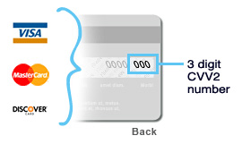
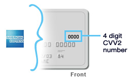

Also known as the Cardholder Verification Value (CVV) or Customer Identification Number (CID/4DBC), these three or four digit numbers help ensure that the physical card is in the cardholder’s possession while donating or shopping online helping to prevent unauthorized or fraudulent use.
The 3-digit code is located on the back of your card, inside the signature area. Typically the signature panel will have a series of numbers, but only the last three digits make up the CVV code.

The CID/4DBC is ALWAYS located ABOVE the embossed (raised) account number on the face of the card. In some instances, the CID/4DBC is located on the left side of the card, but is always above the account number. Some cards have a four-digit number embossed below the account number, but this is not the CID/4DBC.

It’s actually more about what it prevents. When donating or shopping online, the 3 or 4 digit code helps organizations ensure that the card is in the right hands. Organizations will request the CVV at checkout from the cardholder, and the information is sent electronically to the card-issuing bank to verify its validity. Within seconds the CVV results are returned with authorization. If it’s returned invalid, merchants have the right to stop the transaction.
© Flexiesolutions.com 2002-2010. All Rights Reserved. Hosted by Flexihostings.net